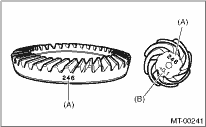
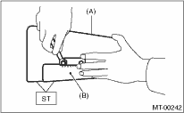
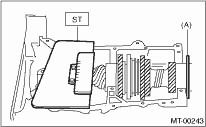

1. Remove the differential assembly.
2. Alignment marks/numbers on hypoid gear set:
The upper number on the drive pinion is a match (A) for combining it with hypoid driven gear. The lower number is for shim adjustment (B). If no lower number is shown, the value is zero. The number on hypoid driven gear indicates a number for mating with the drive pinion.

|
(A) |
Alignment number |
|
(B) |
Number for shim adjustment |
3. Place the drive pinion shaft assembly on transmission main case RH without shim and tighten the bearing mounting bolts.
4. Inspection and adjustment of ST:
NOTE:
• Loosen the two bolts and adjust so that the scale indicates 0.5 correctly when the plate end and the scale end are on the same level.
• Tighten the two bolts.
| ST 499917500 | DRIVE PINION GAUGE ASSY |

|
(A) |
Plate |
|
(B) |
Scale |
5. Position the ST by inserting the knock pin of ST into the knock hole of transmission case.
| ST 499917500 | DRIVE PINION GAUGE ASSY |
6. Slide the drive pinion gauge scale with finger tip and read the value at the point where it matches with the end face of drive pinion.
| ST 499917500 | DRIVE PINION GAUGE ASSY |

|
(A) |
Adjust the clearance to zero without shim. |
7. The thickness of shim shall be determined by adding the value indicated on drive pinion to the value indicated on the ST. (Add if the number on drive pinion is prefixed by +, and subtract if the number is prefixed by −.)
| ST 499917500 | DRIVE PINION GAUGE ASSY |
8. Select one to three shims in the following table for the value determined as described above, and take the shim(s) which thickness is closest to the said value.
|
Drive pinion shim | |
|
Part number |
Thickness mm (in) |
|
32295AA031 |
0.150 (0.0059) |
|
32295AA041 |
0.175 (0.0069) |
|
32295AA051 |
0.200 (0.0079) |
|
32295AA061 |
0.225 (0.0089) |
|
32295AA071 |
0.250 (0.0098) |
|
32295AA081 |
0.275 (0.0108) |
|
32295AA091 |
0.300 (0.0118) |
|
32295AA101 |
0.500 (0.0197) |
9. Install the differential assembly. 
10. Set the transmission main shaft assembly and drive pinion assembly in position. (When doing so, there will be no clearance between the two when moved all the way to the front). Inspect a suitable 1st — 2nd, 3rd — 4th and 5th shifter fork so that the coupling sleeve and reverse driven gear are positioned in the center of the synchronizing mechanism.
11. Install the transmission case.
12. Install the transfer case together with the extension case assembly.
13. Install the manual transmission assembly to the vehicle.